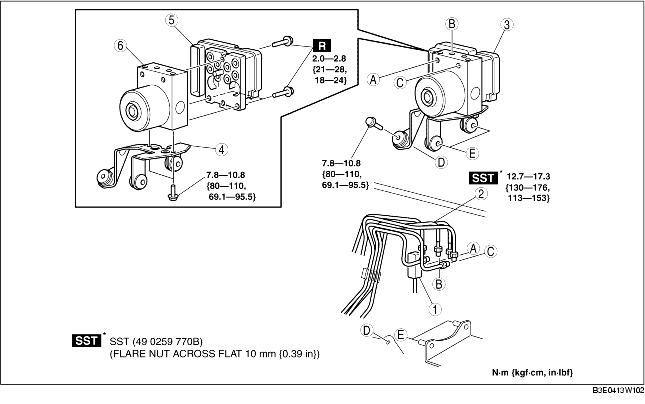

1. Remove the battery and battery tray. (See BATTERY REMOVAL/INSTALLATION [ZJ, Z6].) (See BATTERY REMOVAL/INSTALLATION [LF].)
2. For L.H.D., remove the reserve hose (MTX vehicles). (See Reserve Hose Removal Note.) (See Clutch Pipe and Clutch Reserve Hose Removal Note.) (See Reserve Hose Installation Note.) (See Clutch Pipe and Clutch Reserve Hose Installation Note.)
3. Remove in the order indicated in the table.
4. Install in the reverse order of removal.

.
|
1
|
Connector
(See Connector Removal Note.)
(See Connector Installation Note.)
|
|
2
|
Brake pipe
(See Brake Pipe Removal Note.)
(See Brake Pipe Installation Note.)
|
|
3
|
ABS HU/CM component, bracket
|
|
4
|
Bracket
|
|
5
|
ABS CM
|
|
6
|
ABS HU
|
1. Pull the connector cover up in the direction of the arrow while pressing the tab of the connector cover.
2. Pull the connector toward the vehicle front and remove it.
1. Place an alignment mark on the brake pipe and ABS HU/CM.
2. Apply protective tape to the connector to prevent brake fluid from entering.
3. Remove the brake pipe.
1. As shown in the figure, move the bracket in the direction of the arrow and remove the ABS HU/CM component and bracket from the body.
1. Align the marks made before removal and install the brake pipe to the ABS HU/CM referring to the figure.
1. After connecting the connector, verify that the connector cover is completely pushed in.